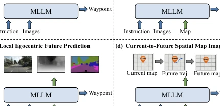
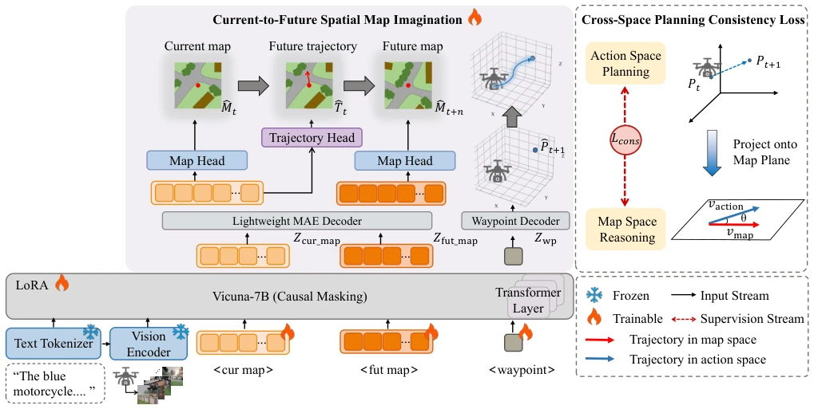
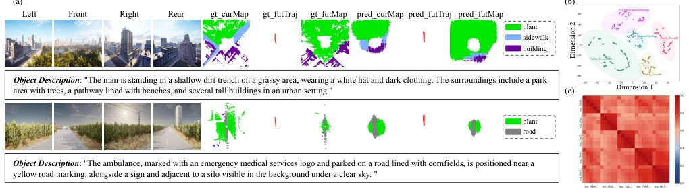
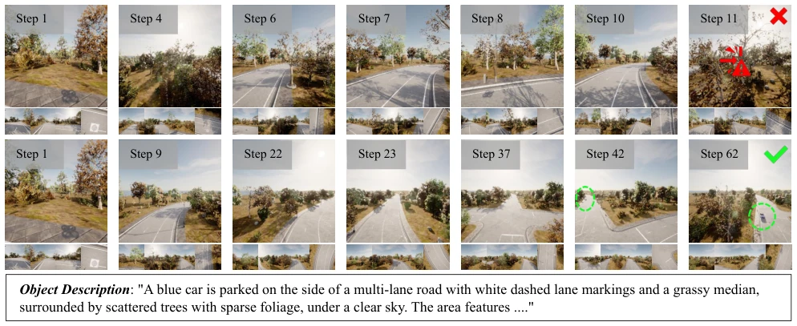
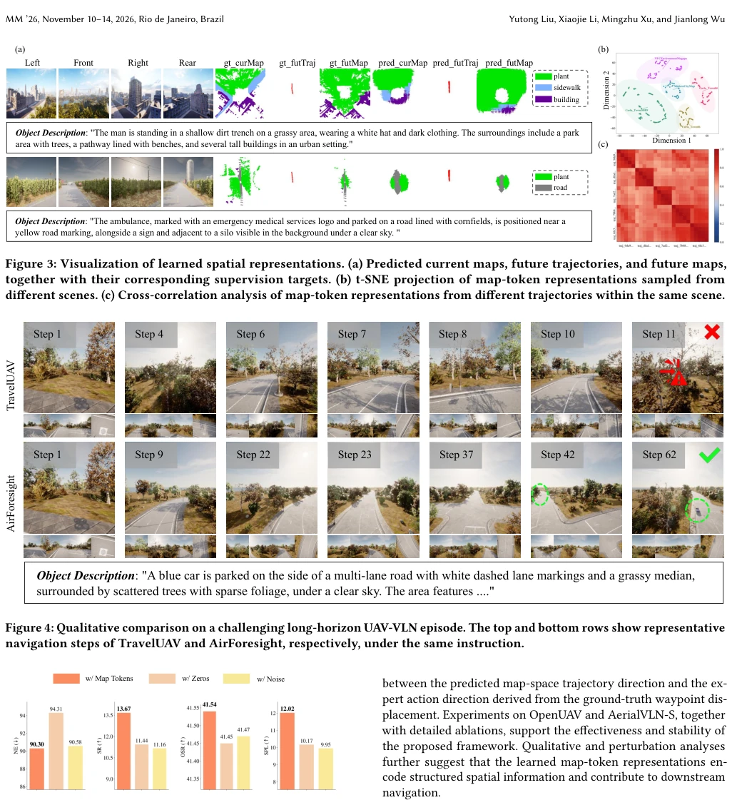
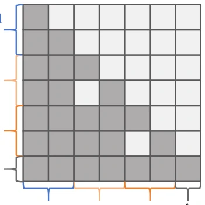
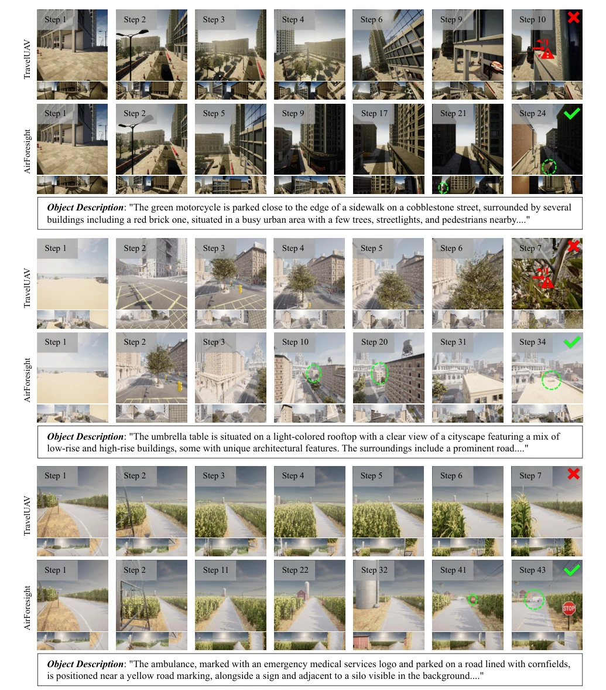
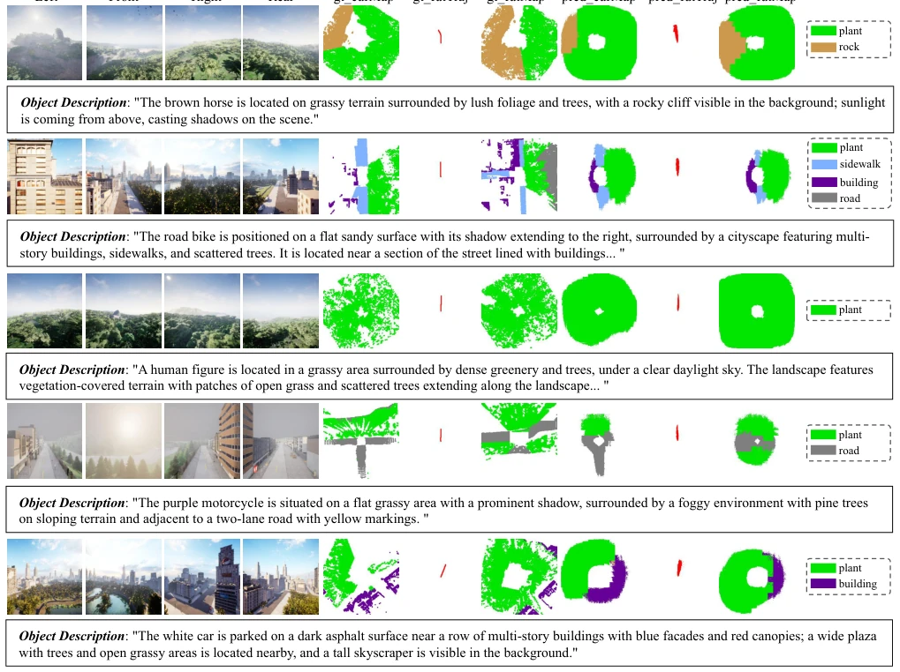

This paper adds a "mind-reading" capability to UAV navigation, attempting to let the model mentally simulate a future map before moving. Although "spatial imagination" is very hot in embodied AI, directly applying it to UAVs requires considering the challenges of 3D action spaces and sparse observations. The authors developed AirForesight, the core of which is "drawing a pie before eating it"—first learn the current map, then guess the future trajectory, and finally decide where to fly. However, will this "mental simulation" lead to hallucinations? After all, a UAV crashing into a tree is not as simple as a large model talking nonsense. Experimental data is indeed slightly better than TravelUAV, but offline annotation costs are not low either, counting as trading compute for accuracy. Overall, it is a robust improvement, but still far from a "general world model". Additionally, the cross-space consistency loss is a highlight, forcibly aligning map reasoning with actions, avoiding the intermediate layer "self-indulgence".
UAV-VLN tasks require UAVs to navigate following language instructions in complex outdoor environments. Existing methods mostly directly map vision-language inputs to actions, suffering from three hard flaws. First is insufficient current scene grounding, such as methods like TravelUAV [40] and OpenFly [13] directly predicting waypoints from discrete observations, lacking structured spatial states and easily getting lost in long-range navigation. Second is limited future spatial foresight, where existing visual imagination methods [18, 20, 24, 27, 48, 51] are mostly limited to local egocentric predictions, unable to model future motion and environmental evolution under shared spatial representations. Finally is the decoupling of spatial imagination and action execution, where intermediate predictions are often just auxiliary objectives, lacking explicit consistency constraints [15, 43], leading to map spatial reasoning failing to effectively guide executable navigation.

Figure 1: Comparison of existing paradigms for UAV-VLN.
方法Method
AirForesight 采用当前到未来的空间地图想象框架。整体流程分为多模态编码、空间表示学习、航点预测和跨空间规划一致性。首先，语言指令和多视角 RGB 观测被编码为统一 token 序列，并追加可学习的 current-map、future-map 和 waypoint tokens。通过 Vicuna-7B 骨干网络下的因果注意力掩码，current-map tokens 编码当前场景结构，并通过轻量级 MAE 解码器监督当前地图重建和未来轨迹预测，迫使模型同时编码现状与意图。接着，future-map tokens 通过结构化因果注意力聚合当前知识和多模态输入，预测未来地图状态。最后，waypoint token 聚合所有空间线索预测下一个 3D 航点。关键创新在于 Cross-Space Planning Consistency Loss (CPCL)，它强制预测的地图空间轨迹方向与专家动作方向（基于真值航点位移）保持一致，桥接了地图推理与动作执行，避免中间预测与最终决策脱节。训练采用两阶段策略，先学航点再学空间，确保稳定性。
AirForesight adopts a current-to-future spatial map imagination framework. The overall process is divided into multimodal encoding, spatial representation learning, waypoint prediction, and cross-space planning consistency. First, language instructions and multi-view RGB observations are encoded into a unified token sequence, and appended with learnable current-map, future-map, and waypoint tokens. Through causal attention masks under the Vicuna-7B backbone network, current-map tokens encode current scene structure, and are supervised by a lightweight MAE decoder for current map reconstruction and future trajectory prediction, forcing the model to encode both status and intent simultaneously. Next, future-map tokens aggregate current knowledge and multimodal inputs through structured causal attention, predicting future map states. Finally, the waypoint token aggregates all spatial clues to predict the next 3D waypoint. The key innovation lies in Cross-Space Planning Consistency Loss (CPCL), which forces the predicted map spatial trajectory direction to remain consistent with expert action directions (based on ground truth waypoint displacement), bridging map reasoning and action execution, avoiding decoupling between intermediate predictions and final decisions. Training adopts a two-stage strategy, learning waypoints first then space, ensuring stability.

Figure 2: Overall architecture of AirForesight. The model jointly processes multimodal inputs with learnable current-map, future-map, and waypoint tokens. The current-map representation is supervised by current-map reconstruction and future- trajectory prediction, while structured causal attention propagates current spatial knowledge to the future-map representation, which is optimized by future-map reconstruction. The waypoint representation integrates current and future spatial cues to predict the next 3D waypoint. A cross-space planning consistency loss further enforces directional alignment between the predicted map-space trajectory and the expert action direction.
实验Experiments
实验主要在 OpenUAV 和 AerialVLN-S 上进行。OpenUAV 包含 12k+ 轨迹，评估指标包括 NE、SR、OSR、SPL。相比 TravelUAV [40]，AirForesight 在 Test Seen Full 上 SR 从 30.47% 提升至 35.83%，NE 从 68.44m 降至 56.99m。在未见地图和未见物体设置下也表现出更强的泛化能力。消融实验显示，当前空间地图建模 (CSMM)、未来空间想象 (FSI) 和 CPCL 均有效，尤其是 CPCL 显著提升了 SR 和 SPL。可视化分析表明，学习到的 map tokens 确实编码了结构化空间信息，且对导航决策有实质贡献。扰动实验也证实了 map tokens 对性能的关键作用。
Experiments were mainly conducted on OpenUAV and AerialVLN-S. OpenUAV contains 12k+ trajectories, evaluation metrics include NE, SR, OSR, SPL. Compared to TravelUAV [40], AirForesight improved SR from 30.47% to 35.83% on Test Seen Full, NE decreased from 68.44m to 56.99m. It also showed stronger generalization ability under unseen map and unseen object settings. Ablation studies show that Current Spatial Map Modeling (CSMM), Future Spatial Imagination (FSI), and CPCL are all effective, especially CPCL significantly improved SR and SPL. Visualization analysis indicates that the learned map tokens indeed encoded structured spatial information and made substantial contributions to navigation decisions. Perturbation experiments also confirmed the key role of map tokens on performance.

Figure 3: Visualization of learned spatial representations. (a) Predicted current maps, future trajectories, and future maps, together with their corresponding supervision targets. (b) t-SNE projection of map-token representations sampled from different scenes. (c) Cross-correlation analysis of map-token representations from different trajectories within the same scene.

Figure 4: Qualitative comparison on a challenging long-horizon UAV-VLN episode. The top and bottom rows show representative navigation steps of TravelUAV and AirForesight, respectively, under the same instruction.

Figure 5: Effect of perturbing the learned map query tokens during inference on OpenUAV Test Unseen Map. The tokens are either retained, replaced with zeros, or replaced with Gaussian noise.
其他图片Other Figures

Figure 6: Structured causal attention in AirForesight. Current- map tokens attend to the multimodal inputs; future-map tokens additionally attend to current-map representations; and the waypoint token attends to all preceding represen- tations. Tokens within the same query group are mutually masked.

Figure 7: Additional qualitative comparisons across diverse long-horizon UAV-VLN episodes. For each example, the top row shows TravelUAV and the bottom row shows AirForesight under the same instruction.

Figure 8: Additional current-map, future-trajectory, and future-map predictions with their corresponding supervision targets.